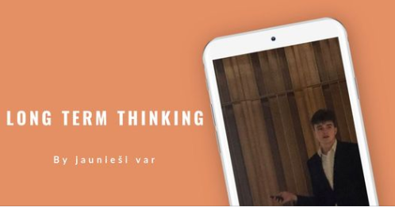

I'm currently growing my boostrsrap skills to the next level
Setting small managable goals helpes me to achive big things
Great experience with #Buddy Lee and #Romans
My first ever laser show in #Altyus
Saying goodbye to school!
Graduation from secondary school
My first atendance in cepums ar #slavenību
My first ZPD conforence at LBTU
My first Lecture was amazing
The more people I meet, the more I learn

My second Lecture
×
Detalizēta informācīja
117 people responded
Pasākuma rīkotājs: #jauniesivar
Ilgums: 1h
Publisks pasākums-Ikviens facebook tīklā vai ārpus tā
Kas ir motivācīja
Tev noteikti ir velmē sevi pilnveidot un izzināt sevi, jo neizsīkstošs cīņas spēks mums katram ir vajadzīgs savu mērķu sasniegšanai un to pilnveidošanai.
Kā sevi motivēt, šis bija jautājums, kuru es sev uzdevu, lai mainītu savu dzīvi un cilvēkus sev apkārt.
Pēdējo gada laikā esmu uzkrājis zināšanas un sapratis, kas tad īsti ir motivācija un arī Tev būs tāda iespēja.
Tiekamies ceturdien pl. 17:00, RoomSpiikiizi , kur es, Daniels Rafaels, bezmaksas dalīšos savā pieredzē kā Tev sevi pilveidot ar motivāciju.
No 20 gadus veca jaunieša skatu punkta, kurš ir piedzīvojis izmaiņas dzīvē no 16 gadiem, izaugot un dzirdot lekciju par "Long term thinking" savā skolā, ir izveidojusies dziļa apziņa par šīs tēmas nozīmi un ietekmi. Šī lekcija iespēja apjaust ilgtermiņa perspektīvu, iedvesmojot viņu meklēt izaicinājumus un attīstīties, lai sasniegtu ilgstošus mērķus.
Pēc šīs lekcijas jaunieša dzīve mainījās. Viņš sāka veltīt laiku ikdienas treniņiem, lai attīstītu savu disciplīnu, iedvesmots no viena no savām iecienītākajām motivācijas runām, ko teica Billy Allsbrooks. Šī attīstība fiziskā līmenī bija tikai sākums. Jaunietis sāka ieraudzīt lietas plašākā perspektīvā un saprast, ka ilgtermiņa domāšana ir ne tikai par šodienas panākumiem, bet arī par attīstību un izaugsmi nākotnē.
Viņš sāka pielikt lielāku centību izglītībā, mācoties ne tikai skolas priekšmetus, bet arī iegūstot zināšanas ārpus skolas, strādājot ar cilvēkiem no dažādām jomām un meklējot iespējas attīstīties. Viņa redzesloks paplašinājās, sākot ieraudzīt savu vietu pasaulē un to, kā viņa darbības varētu veicināt pozitīvas pārmaiņas plašākā mērogā.
Ar katru pavadīto gadu, jaunietis attīstīja izturību un izpalīdzību,
mācoties no savām kļūdām un pieliekot pūles, lai sasniegtu ilgtermiņa mērķus.
Viņš sāka izstrādāt konkrētu plānu un stratēģiju,
lai nodrošinātu savu izaugsmi un panākumus ne tikai tuvā nākotnē,
bet arī ilgtermiņā. Jaunietis iemācījās vērtēt ilgstošu ietekmi
un izvērtēt savas izvēles un darbības attiecībā pret savu labklājību un mērķiem.